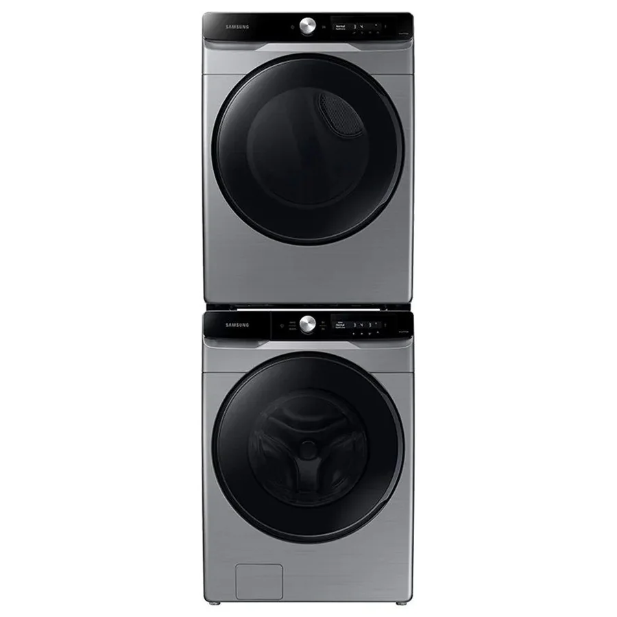

Cobertura en Santiago de María
Atendemos Santiago de María y sus alrededores, en el oriente y la zona paracentral. Algunas referencias de la zona:
Santiago de María
Cómo es la visita en esta zona
Es una zona de urbanizaciones y conjuntos, algo más alejada del centro. Te confirmamos la disponibilidad de visita al coordinar por WhatsApp.
Equipos Samsung que revisamos
Visitamos Santiago de María para reparar y dar mantenimiento a estos electrodomésticos:
Reparación por electrodoméstico en Santiago de María
Zonas cercanas
Preguntas frecuentes
¿Atienden en Santiago de María?
Sí. Escríbenos tu dirección y una referencia por WhatsApp y coordinamos la visita en Santiago de María.
¿Qué equipos Samsung reparan en Santiago de María?
Refrigeradoras, neveras, lavadoras y secadoras.
¿Cuánto cuesta la visita?
Escríbenos con el equipo, el modelo y la falla; te confirmamos el costo de la visita antes de ir.